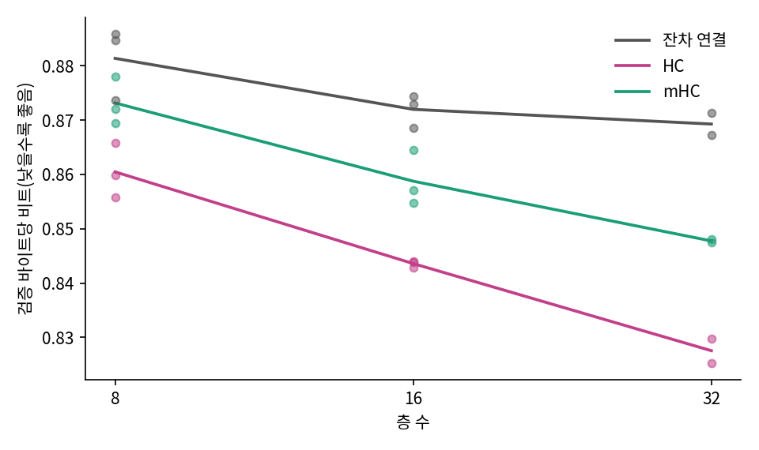
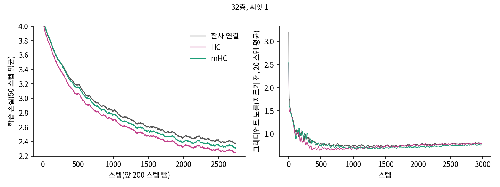
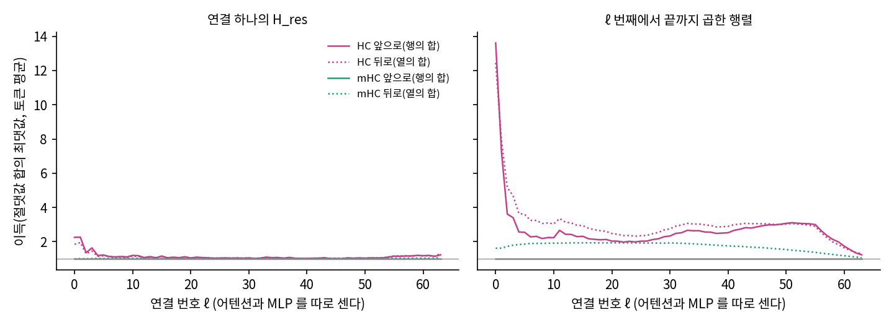
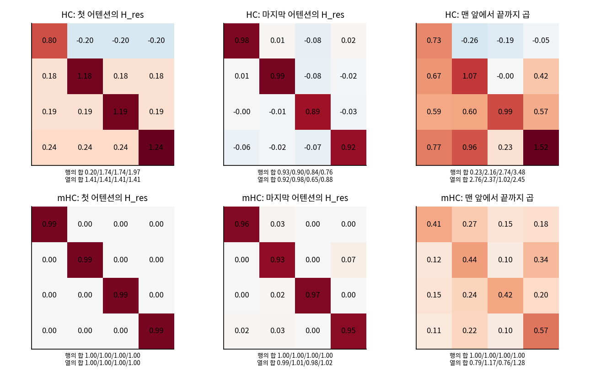

층 사이를 고치기: 잔차 연결에서 하이퍼 연결과 mHC 까지
세 구조를 같은 조건으로 재기
세 구조를 동화 데이터(타이니스토리즈, BPE 어휘 4,096)에서 비교한다. 조건은 모두 맞춘다. 헤드 4, 문맥 128, 배치 32, 3,000 스텝(12,288,000 토큰), 학습률 최대 1e-3 에 워밍업 200 스텝 뒤 코사인, AdamW, 그래디언트 자르기 1.0, 확장률 n = 4 이고, 잔차 연결과 HC 는 폭 128, mHC 는 파라미터 수를 맞추느라 폭 120 이다. 씨앗은 8층과 16층이 셋, 32층이 둘이고, 씨앗이 같으면 세 구조가 같은 순서로 같은 배치를 읽는다(sources/mhc/run_lm.py, 요약 sources/mhc/analyze.out). 동화 GPT 의 정식 학습이 4억 5,875만 토큰을 읽었으니 여기서 재는 것은 학습 초반이다.
L= 8 res 폭 128 파라미터 2,127,104 | bpb 0.8858 0.8847 0.8736 | 평균 0.8813 범위 0.0122
L= 8 hc 폭 128 파라미터 2,143,904 | bpb 0.8599 0.8658 0.8557 | 평균 0.8605 범위 0.0100 | 이득 앞 3.02 뒤 2.96 (학습 중 최고 6.95)
L= 8 mhc 폭 120 파라미터 2,086,752 | bpb 0.8780 0.8720 0.8694 | 평균 0.8731 범위 0.0086 | 이득 앞 1.00 뒤 1.15 (학습 중 최고 1.00)
L= 16 res 폭 128 파라미터 3,713,280 | bpb 0.8744 0.8729 0.8686 | 평균 0.8720 범위 0.0058
L= 16 hc 폭 128 파라미터 3,746,880 | bpb 0.8428 0.8439 0.8440 | 평균 0.8436 범위 0.0012 | 이득 앞 5.15 뒤 4.73 (학습 중 최고 15.76)
L= 16 mhc 폭 120 파라미터 3,666,384 | bpb 0.8547 0.8571 0.8645 | 평균 0.8587 범위 0.0098 | 이득 앞 1.00 뒤 1.52 (학습 중 최고 1.00)
L= 32 res 폭 128 파라미터 6,885,632 | bpb 0.8713 0.8672 | 평균 0.8693 범위 0.0041
L= 32 hc 폭 128 파라미터 6,952,832 | bpb 0.8253 0.8298 | 평균 0.8276 범위 0.0045 | 이득 앞 15.73 뒤 14.71 (학습 중 최고 62.45)
L= 32 mhc 폭 120 파라미터 6,825,648 | bpb 0.8475 0.8480 | 평균 0.8478 범위 0.0006 | 이득 앞 1.00 뒤 1.92 (학습 중 최고 1.00)

세 층 수 모두 HC, mHC, 잔차 연결 순서로 낮았다. 잔차 연결은 8층에서 16층으로 갈 때 0.8813 에서 0.8720 이 되고 32층에서는 0.8693 으로 거의 멈췄는데, HC 는 0.8605, 0.8436, 0.8276 으로 층을 늘린 만큼 계속 내려갔다. 8층 HC 가 파라미터가 3 배 넘게 많은 32층 잔차 연결보다도 낮았다. mHC 는 그 사이에 있어서 8층에서는 잔차 연결과의 차이(0.0082)가 씨앗 사이의 범위(0.0122)보다 작고, 32층에서는 0.0215 로 범위를 넘는다. 같은 배치를 읽은 씨앗끼리 짝지어 보면 8층에서도 세 씨앗 모두 mHC 가 낮으니(차이 0.0078, 0.0127, 0.0042), 차이가 없다고 말하기도 어렵다.
숫자의 차이가 글에서도 보일까? 16층(씨앗 2) 세 모델에 같은 시작 문장을 주고 온도 0.8 로 뽑았다. res 가 잔차 연결이고, 모델마다 첫 샘플의 앞부분만 옮겼다(sources/mhc/sample_mhc.out).
[res 1] Once upon a time, there was a little girl named Lily. She was very excited to play with her friends. Her friends told Lily that she was not like to stop fighting. Mia said she would be brave and be brave with her friends.\nOne sunny day, Lily went to the park to play. She saw a big, warm tree and wanted to climb the …
[hc 1] Once upon a time, there was a little girl named Lily. She was very enthusiastic to play with her friends. One day, Lily found a big box in the box. She thought it was a toy.\nLily wanted to show her friends the box. She took a small box with the box. Her friends were amazed. They wanted to see what could use the box …
[mhc 1] Once upon a time, there was a little girl named Lily. She was very enthusiastic about to explore her friends and remember how to escape. One day, she was walking outside her house to find her way home. She looked around and noticed a beautiful flower!\nAnnigligliver called out to her. "Hello here I'm Daisy. I can't …

Annigligliver 는 누구야?

mHC 가 만든 친구겠지. 세 모델 다 네 살배기 동화 수준이라 글만 봐서는 못 가르겠다. 0.03 차이는 숫자로만 보이네.
손실 곡선과 그래디언트: 터지지 않았다
mHC 논문의 27B 모델이 30층이었으니, 논문이 말한 불안정이 층 수 때문이라면 32층에서 보여야 한다.

튀는 곳은 보이지 않았다. 300 스텝 뒤에서 앞 50 스텝의 중앙값보다 손실이 0.3 넘게 오른 스텝을 세면 16층까지 세 씨앗 합쳐 많아야 1 번, 32층은 0 번이었다. 그 1 번은 모두 씨앗 3 의 868 스텝(8층 잔차 연결, 16층 세 구조)이니 구조보다 그 배치의 글 탓이다. 300 스텝 뒤 그래디언트 노름의 최댓값은 32층 HC 가 1.07 로 잔차 연결의 1.22 보다 작았다. 자르기가 숨겼을 수 있으니 자르기를 끄고 1,500 스텝을 다시 돌렸는데(씨앗 1), 300 스텝 뒤 자르기 전 노름의 최댓값은 HC 1.13, mHC 1.29, 잔차 연결 1.18 이었고 검증 바이트당 비트는 0.9830, 1.0060, 1.0243 이었다. 맨 처음 몇 스텝의 노름은 세 구조 모두 6~9 였다가 곧 내려왔다. 이 크기의 HC 는 HC 논문이 10억 파라미터 모델에서 적은 그대로 얌전하다.
그렇다고 신호 배율이 그대로였던 것은 아니다. 논문과 같은 방법으로 이득을 재면(앞 8 조각, 토큰 평균) 32층 HC 의 곱 행렬이 학습 500 스텝에 49.8(씨앗 1), 62.4(씨앗 2)까지 올랐다가 3,000 스텝에 13.6, 17.9 로 내려왔다. 층 수별 마지막 값의 평균은 8층 3.02, 16층 5.15, 32층 15.73 이니 층이 깊을수록 커지는 것은 논문의 설명과 맞는다. mHC 는 앞쪽 이득이 언제나 1.00 이고 뒤쪽 이득은 8층 1.15, 16층 1.52, 32층 1.92 로, 곱에서 약 1.6 이라는 논문 값과 같은 크기다.

섞기 행렬은 어떤 모습이 되었나
16층 씨앗 1 의 행렬을 그대로 펼쳐 보자. 위치와 조각에 대해 평균 낸 값이다.

HC 의 첫 어텐션 행렬은 대각선 바깥이 한 행에서 모두 같은 값을 가진 이상한 모습이다. 처음에 네 줄이 모두 임베딩의 복사본이므로 첫 연결에서는 행 안에서 어느 칸에 무게를 두든 결과가 같고, 행의 합만 뜻을 가지기 때문이다. 그 행의 합이 0.20, 1.74, 1.74, 1.97 로 줄마다 다르니, HC 는 첫 연결에서 임베딩을 얼마나 실을지를 줄마다 다르게 배웠다. 곱 행렬의 첫 행은 음수 칸까지 있다. mHC 의 첫 행렬은 처음 값 그대로 0.993 대각선에 머물렀는데, 같은 이유에서 행의 합이 1 로 묶이면 첫 연결은 배울 것이 없다. 뒤로 가면 mHC 도 줄끼리 섞기를 배워서 16층 곱 행렬의 대각선은 0.41~0.57 이고, 모든 칸이 1/4 인 행렬까지는 가지 않았다. 숫자 예의 (3, 1) 이 (2, 2) 로 뭉개지던 일은 이 깊이에서 벌써 많이 진행되어, 대각선이 1 에서 1/4 까지 가는 길의 58~79% 를 지났다.
무엇 때문에 HC 가 앞섰나: 하나씩 빼 보기
결과가 논문과 달랐으니 우리 설정 탓인지부터 확인한다. 후보를 하나씩 바꾸어 16층에서 다시 쟀다(각 줄의 숫자는 analyze.out).
| 바꾼 것 | 씨앗별 바이트당 비트 | 비교 대상 |
|---|---|---|
| HC 기본 | 0.8428, 0.8439 | |
| HC 에서 출력 투영 √n 배 끄기 | 0.8393, 0.8447 | HC 기본과 차이 없음 |
| HC n = 2 | 0.8440 | n = 4 와 비슷 |
| HC n = 8 | 0.8394 | 씨앗 하나, 조금 낮음 |
| mHC 기본(폭 120) | 0.8547, 0.8571 | |
| mHC 폭 128(파라미터 +10.6%) | 0.8521, 0.8510 | 폭을 맞추느라 잃은 것은 0.004 안팎 |
| mHC 정적 대각선 6 → 3 (섞기를 많이 하고 출발) | 0.8564 | 나아지지 않음 |
| mHC n = 2(폭 128) | 0.8577 |
폭을 돌려줘도, 처음 값을 바꿔도 mHC 는 HC 에 닿지 못했으니, 파라미터 수 맞추기나 우리가 고른 처음 값은 차이를 설명하지 못한다. 남는 후보는 제약 자체다. 이 크기, 이 학습 길이에서는 줄마다 배율을 자유롭게 정할 수 있는 HC 가 평균을 지키는 mHC 보다 빨리 내려갔는데, 두 구조는 동적 값을 만드는 방법도 달라서(줄마다 읽기 대 이어 붙여 읽기) 제약만 떼어 잰 결과는 아니므로 이 설명은 아직 짐작이다. 다만 우리는 1,229만 토큰까지만 쟀고, 논문의 27B 모델은 2,620억 토큰을 읽었다. 그 27B 모델의 벤치마크 표에서도 mHC 와 HC 의 차이는 HC 와 잔차 연결의 차이보다 작다(추론 문제 모음 BBH 의 정답률이 잔차 연결 43.8, HC 48.9, mHC 51.0 이고, 수학 문제 모음 MATH 는 22.0, 26.4, 26.0).
비용과 Depo
같은 프로세스에서 번갈아 재서 다른 작업의 영향을 같게 받도록 한 16층의 비용이다(sources/mhc/bench.out).
잔차 연결 파라미터 3,713,280 | 스텝당 53.8 ms | 잔차 연결의 1.00 배
HC n=4 파라미터 3,746,880 | 스텝당 153.0 ms | 잔차 연결의 2.85 배
mHC n=4 파라미터 3,666,384 | 스텝당 373.2 ms | 잔차 연결의 6.94 배
mHC n=4 폭128 파라미터 4,107,360 | 스텝당 374.6 ms | 잔차 연결의 6.97 배
잔차 연결 최대 메모리 576 MiB
HC n=4 최대 메모리 1195 MiB
mHC n=4 최대 메모리 1542 MiB
mHC n=4 폭128 최대 메모리 1598 MiB
HC 가 2.85 배, mHC 가 6.94 배 느리고 메모리는 두 배에서 세 배 가까이 든다. 다른 학습이 없는 GPU 에서 다시 재니 스텝당 10.6, 27.9, 90.7 ms 로 2.63 배와 8.55 배였으니(sources/mhc/bench_quiet.out), 스텝당 시간의 비율은 GPU 를 함께 쓰는 정도에 따라 이만큼 움직인다. 잔차 스트림이 네 줄이니 그만큼 읽고 쓰는 양이 늘고, mHC 는 거기에 토큰마다 싱크혼 20 바퀴와 역전파가 얹힌다. 논문의 6.7% 는 전용 커널과 재계산을 쓴 자기들의 대규모 학습에서 잰 값이고, 층의 계산 F 가 커서 연결의 비중이 작을 큰 모델의 값이므로, 작은 모델을 파이토치 그대로 돌린 우리 값과 같은 줄에 놓을 수 없다.
64층은 메모리와 시간이 많이 들어 배치를 16 으로 줄이고 2,000 스텝(씨앗 1)만 쟀다. 걸린 시간은 잔차 연결 398초, HC 851초, mHC 2,616초다.
64층 res 폭 128 파라미터 13,230,336 | bpb 1.0674 | 노름 최대 1.22 | 손실 튐 11
64층 hc 폭 128 파라미터 13,364,736 | bpb 1.0114 | 노름 최대 1.26 | 손실 튐 14 | 이득 앞 44.36 뒤 35.02 (학습 중 최고 154.67)
64층 mhc 폭 120 파라미터 13,144,176 | bpb 1.0439 | 노름 최대 1.06 | 손실 튐 12 | 이득 앞 1.00 뒤 2.42 (학습 중 최고 1.00)
배치가 달라 위의 표와 숫자를 바로 비교할 수는 없지만 순서는 같고(1.0114, 1.0439, 1.0674), HC 의 곱 이득은 학습 500 스텝에 154.7 까지 올라 층을 늘릴수록 커지는 흐름이 이어진다. mHC 의 뒤쪽 이득은 2.42 다. 손실이 앞 50 스텝 중앙값보다 0.3 넘게 튄 스텝은 세 구조가 11~14 번으로 비슷했는데, 어느 구조에서든 튄 스텝 16 곳 가운데 9 곳은 세 구조에서 같은 자리였다(459, 554, 863 스텝 등). 씨앗이 같으면 배치가 같으니 이것은 구조의 불안정이 아니라 그 배치의 글 탓이고, 배치가 16 으로 작아 스텝 사이 손실 차이의 표준편차가 0.123 에서 0.179 로 커지면서 문턱을 자주 넘은 것이다.
캐논 층을 재던 Depo 시험(노드 16 개, 4층, 폭 256)에도 같은 시험지를 걸었다. 스크립트 sources/canon/depo.py 는 고치지 않고 모델만 바꾸어 끼웠고(sources/mhc/depo_hc.py), 3,000 스텝, 씨앗 1 이고, mHC 는 폭 240 이라 파라미터가 6% 적다.
잔차 연결 파라미터 3,323,392 | k=1:6.6% k=2:7.4% k=3:8.0% k=4:7.3%
HC n=4 파라미터 3,339,984 | k=1:7.5% k=2:8.2% k=3:8.5% k=4:6.8%
mHC n=4 폭 240 파라미터 3,115,896 | k=1:6.2% k=2:7.7% k=3:7.6% k=4:6.4%
네 단계 정답률은 셋 모두 무작위 6.25% 근처다. 같은 시험에서 캐논-ABCD 모델은 8,000 스텝 일정의 3,000 스텝에 1 단계를 67.1~73.3% 까지 올렸으니, 층 사이의 연결을 넓히는 것은 이 시험의 막힌 곳을 건드리지 못했다. 캐논 층을 찾아낸 것과 같은 이유로, 이 시험의 첫걸음은 토큰 축으로 이웃을 읽는 일이고 층 사이를 고치는 HC 는 그 일을 대신하지 않는 듯하다. 씨앗 하나에 3,000 스텝이니, 더 오래 돌리면 달라질지는 재지 않았다.
문제 5. 표만 보고 「mHC 는 HC 보다 못하다」고 쓸 수 있을까
표에서 16층은 HC 평균 0.8436, mHC 평균 0.8587, 씨앗 사이 범위는 각각 0.0012, 0.0098 이다. (가) 평균의 차이는 씨앗 변동보다 큰가? (나) 표의 수치로 「mHC 는 HC 보다 못하다」는 문장을 쓴다면, 규모와 학습 길이에 관한 논문 값을 함께 놓고 볼 때 무엇을 덧붙여야 하나? (다) 민준이 「그럼 루나에는 HC 를 넣자」고 했다. 표에서 어떤 숫자가 그 말에 반대하는가?

(가) 0.8587 − 0.8436 = 0.0151 이고 범위는 많아야 0.0098 이니까 크긴 해. 씨앗 셋이라 넉넉하진 않지만.

(나) 그럼 그냥 써도 되는 거 아니에요? 세 층 수에서 다 HC 가 낮았는데.

논문의 27B 모델은 몇 토큰을 읽었죠?

2,620억이요. 우리는 1,229만이니까 2만 배가 넘네요. 파라미터도 3,900 배쯤 차이 나고요. 그럼 「초반 1,229만 토큰, 파라미터 수백만 개에서는」까지 붙여야겠네요.

그리고 우리가 잰 건 손실이 내려가는 속도야. 논문이 고친다고 한 건 오래 학습할 때 터지는 일이고. 그건 애초에 안 터졌으니까 mHC 의 장점을 볼 기회가 없었던 거지.
(다)는요?

시간이요. HC 가 스텝당 2.85 배면 같은 시간에 잔차 연결은 8,500 스텝쯤 돌아요. 그러면 0.8720 보다는 낮아질 텐데, 얼마나 낮아질지는 안 재 봤네요.
캐논 층 때 시간을 맞춰 다시 쟀던 것과 같은 문제네. 우리 표는 스텝을 맞춘 비교고.
그건 큰 장비 없이도 재 볼 수 있어요. 스텝 수를 시간 비율대로 늘려서 16층을 다시 돌려 볼까요?
스텝 수는 GPU 를 나눠 쓰며 잰 스텝당 시간 비율(2.85 배, 6.94 배)로 정하고 학습률 스케줄도 늘린 스텝 수에 맞추었으며, 씨앗은 1 과 2 다(sources/mhc/jobs4_time.sh, 요약 sources/mhc/analyze.out).
HC 3,000 스텝의 시간
HC 3,000 스텝 | bpb 0.8428 0.8439 평균 0.8434
잔차 연결 8,532 스텝 | bpb 0.7199 0.7200 평균 0.7199
mHC 3,000 스텝의 시간
mHC 3,000 스텝 | bpb 0.8547 0.8571 평균 0.8559
HC 7,318 스텝 | bpb 0.7103 0.7141 평균 0.7122
잔차 연결 20,810 스텝 | bpb 0.6591 0.6594 평균 0.6592
같은 스텝(학습을 늘렸을 때)
HC 7,318 스텝 | bpb 0.7103 0.7141 평균 0.7122
잔차 연결 7,318 스텝 | bpb 0.7364 0.7368 평균 0.7366
mHC 7,318 스텝 | bpb 0.7197 0.7210 평균 0.7204
같은 시간이면 잔차 연결이 0.7199 고 HC 는 0.8434 네요. 표에서 본 차이보다 훨씬 커요. HC 를 넣자는 말은 취소해야 하나요?

잠깐, 아래 줄들을 봐. 스텝을 맞추면 7,318 스텝에서도 HC 가 0.0244 낮아. 스텝마다 더 배우는 건 맞는데, 우리 구현에서 스텝 하나가 비싼 거야.

mHC 도 같이 늘려 봤네요. HC 와의 차이가 3,000 스텝의 0.0125 에서 7,318 스텝의 0.0082 로 줄었어요. 더 돌리면 만나나요?

거기까지는 재지 않았어요. 길이 둘에 씨앗 둘이라 추세라고 하기도 일러요. 그리고 2.85 배는 폭 128 모델을 전용 커널 없이 돌려서 잰 값이에요. 층의 계산이 큰 모델일수록 연결의 비중이 작아지니까 이 표를 큰 모델로 옮길 수는 없어요. 「이 크기, 이 구현에서는 같은 시간에 잔차 연결이 낮다」까지만 말할 수 있어요.
문제 6. 이득이 50 인데 왜 손실이 안 튈까
32층 HC 는 학습 500 스텝에 곱 행렬의 이득이 49.8 이었는데 손실 곡선은 매끄럽고 300 스텝 뒤 그래디언트 노름은 1.07 을 넘지 않았다. (가) 이득 그림에서 이득이 큰 연결은 어디인가? (나) 곱 행렬이 신호를 수십 배로 키워도 층이 받는 입력과 로짓의 크기가 그만큼 커지지 않는 이유를 우리 GPT 구조에서 찾아라. (다) 논문의 27B 모델에서는 이득 3,000 과 함께 손실이 튀었다. 그 두 사실을 잇는 인과가 우리 실험으로 확인되었는가?
(가) 맨 앞 몇 연결이요. 오른쪽 그림이 왼쪽 끝에서만 13.6 까지 치솟고 ℓ = 2 에서 3.6, 그 뒤로는 2~3 이에요. 처음 연결 행렬의 행의 합이 0.20, 1.74 이런 식이었고요.

곱에 맨 앞 두세 연결이 들어가느냐에 따라 값이 그렇게 바뀌는 거니까, 곱의 이득이 큰 건 대부분 그 맨 앞 행렬들 탓이겠네. 임베딩을 줄마다 다른 배율로 키운 거야.
그렇게 커진 신호가 다음에 어디로 들어가죠?
층은 읽은 걸 층 정규화부터 해요. 끝에서도 마지막 층 정규화를 지나고요. 크기가 커져도 정규화가 다시 맞추겠네요. 어텐션이나 MLP 입장에서는 입력 크기가 그대로인 거예요.
그럼 정규화가 없는 자리인 줄끼리의 합에서만 커진다는 거네요. 그건 짐작이고, 정규화를 뺀 모델로 돌려 본 건 아니잖아요.
돌려 보지 않았어요. (다)도 마찬가지예요. 우리가 본 것은 층이 깊을수록 이득이 커진다는 데까지이고, 이득과 손실 급등을 잇는 논문의 설명은 틀렸다고도 맞았다고도 할 수 없어요.
나는 층이 깊을수록 이득이 커지니까 인과까지 확인된 줄 알았는데, 우리 표에서 손실이 튄 건 없었네. 일어나지 않은 일이니까 우리 표로는 답을 못 하는 거야.